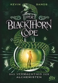
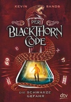
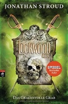
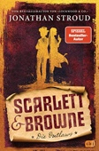

| # |
Autor |
Serie |
Titel |
Format |
Seiten |
Erscheinungsdatum |
Verlag |
Genre |
| 161 |
Kevin Sands |
Der Blackthorn-Code |
1 - Das Vermächtnis des Alchemisten |
Hardcover |
|
|
Dtv |
Krimi |

1 - Das Vermächtnis des Alchemisten Kevin Sands

ISBN: 9783423761482
Maße: 21.3 x 15.9 x 3.8 cm
Serie: Der Blackthorn-Code
Hinzugefügt am: 22.09.2017
Zusammenfassung:
Themen
|
| 162 |
Kevin Sands |
Der Blackthorn-Code |
2 - Die schwarze Gefahr |
Hardcover |
|
|
Dtv |
Krimi |
2 - Die schwarze Gefahr Kevin Sands

ISBN: 9783423761666
Maße: 21.6 x 16.2 x 4.2 cm
Serie: Der Blackthorn-Code
Hinzugefügt am: 22.09.2017
Zusammenfassung:
Themen
|
| 163 |
Kevin Sands |
Der Blackthorn-Code |
3 - Das Geheimnis des letzten Tempelritters |
Hardcover |
447 |
Mai 2018 |
Dtv |
Krimi |
3 - Das Geheimnis des letzten Tempelritters Kevin Sands
Serie: Der Blackthorn-Code
Hinzugefügt am: 03.11.2018
Zusammenfassung:
Themen
|
| 164 |
Klaus Schädelin |
|
Zeitlupe Zytlupe |
Broschiert |
207 |
|
Edition Francke im Cosmos Verlag, |
Comics & Mangas zeichnen |
Zeitlupe Zytlupe Klaus Schädelin
ISBN: 9783305003006
ListPrice: EUR 15,85
Ausgabe: 4. Aufl.
Hinzugefügt am: 08.11.2013
Zusammenfassung:
Themen
|
| 165 |
Friedrich Von Schiller |
|
Die Räuber |
Taschenbuch |
176 |
Dez. 1986 |
Reclam, Ditzingen |
Romane & Erzählungen |
Die Räuber Friedrich Von Schiller
ISBN: 9783150000151
ListPrice: EUR 3,10
Maße: 0.39 x 5.75 x 3.78 in
Wertung: 4.5 (16 Stimmen)
Hinzugefügt am: 03.12.2008
Zusammenfassung: Ich möchte es gleich vorwegnehmen: Lesen Sie „De Räuber" von Friedrich Schiller. Sicherlich gibt es viele gute Theaterinszenierungen. Leider beschränken sich diese jedoch auf den Terrorismus. Diese Tatsache ist mehr als bedauerlich.
Schillers „Die Räuber" wird meistens in die Epoche des Sturm und Drangs eingeordnet. Gefühle und Triebe werden in dieser Epoche dem Verstand gegenübergestellt. Meiner Meinung nach ist Schillers Drama jedoch weit mehr als nur ein Stück des Sturm und Drangs. Friedrich Schiller, der dieses Stück in sehr jungen Jahren verfasst hat, muss seiner Zeit weit voraus gewesen sein. Er stellt dem verstandorientierten Franz einen gefühlvollen Bruder Karl gegenüber. Beide werden oder können nicht glücklich werden.
Friedrich Schiller hat, und das ist nur wenigen bekannt, eine Vorrede zu seinem Stück geschrieben. In dieser Vorrede schreibt Schiller von Bösewichten, die unglücklich werden, obwohl sie auf dem Weg zum höchsten glück sind. Karl und Franz können ohne jede Frage als Bösewichte bezeichnet werden. Karl, Hauptmann einer Räuberbande, ist Mörder vieler ihm unbekannter Menschen. Außerdem ist er der Mörder seiner Geliebten Amalia. Und sein Vater ist durch ein schock, der durch Karls unsensible Worte hervorgerufen wurde, gestorben. Sein Bruder Franz ist ebenfalls ein Bösewicht. Schließlich hat er eine Intrige gegen seinen Bruder geplant, ist für dessen Entwicklung mitverantwortlich, und auch der Tod seines Vaters wurde von ihm geplant. Warum fragt man sich jedoch, sind diese Bösewichte auf dem Weg zum höchsten Glück. Ganz einfach: Zur zeit des Sturm und Drangs war der Begriff des Genies von zentraler Bedeutung. Das Genie stellte derjenige dar, dem es durch Originalität, Individualität und durch eine gewisse Stärke möglich war, auf gesellschaftlicher, politischer und vor allem literarischer Ebene sich seine eigenen Grenzen zu schaffen. Friedrich Schiller, der durch das Schauspiel „Die Räuber" auf Grund seines Hinwegsetzens über die literarischen Gesetze selbst zum Genie wurde, hieß diese Entfaltung des Menschen sicherlich für richtig. Für ihn stellte diese Entwicklung zum Genie den Weg zum höchsten Glück dar. Beide Brüder, sowohl Franz als auch Karl, schaffen sich ihre eigenen Gesetze, indem sie sich über gewisse Normen und Konventionen hinwegsetzen. Beide haben erkannt, dass solche Konventionen die Individualität und die völlige Entfaltung der eigenen Person einschränken. Beide sind Genies, aber sie sind nicht glücklich. Die Antwort, die Schillers Schauspiel hierfür liefert, ist das eigentliche Geniale. Das Scheitern Karl und Franzens macht die eigentliche Kritik Schillers aus. Es ist diese Kritik, die zeigt, wie weit Schiller seiner eigenen Zeit voraus war. Karl und Franz sind gescheitert, weil sie den Einklang zwischen Gefühl und Verstand nicht gefunden haben und damit die Fähigkeit zum Leben verloren haben. Aus diesem Grund sind sie, wie Schiller außerdem in seiner Vorrede erwähnt, „auf dem Weg zur vollkommensten Vollkommenheit zu den unvollkommensten" geworden.
Franz hat die Mitte zwischen Gefühl und Verstand gefunden. Die Enttäuschung und der Schmerz, die er in seiner Kindheit erfahren musste, hat er nicht verarbeitet. Er hat erst seine Gefühle radikalisiert; Enttäuschung und Schmerz wurden zu Hass, und später dieses Gefühl von Hass unterdrückt. Von dort an hat er nur noch Pläne geschmiedet, die ihm zu einem besseren Leben verhelfen sollten. Dabei hat er jedoch nur seinen Verstand eingesetzt und seine Gefühle, wie schon erwähnt, vollends unterdrückt. Das Unterdrücken seiner Gefühle und die zwanghafte Überbetonung seines Intellekts wurden ihm letztendlich zum Verhängnis. Wie ein Sturm sind kurz vor seinem Tod die unterdrückten Gefühle aus ihm herausgedrungen. Die Gefühle Franzens sind zu einer überdimensionalen Macht geworden, die seinen Verstand vollständig ausgelöscht haben, und ihn somit in den Wahnsinn getrieben haben. Dieser Wahn ist erst durch die Unterdrückung der Gefühle entstanden.
Wie sein Bruder ist auch Karl Opfer seiner Gefühle geworden. So kann er mit seinem Schmerz und seiner Enttäuschung über die angebliche Verstoßung seines Vaters nicht vernünftig umgehen. Karl radikalisiert ebenfalls seine Gefühle und wird zu einem Räuber. Obwohl er im Laufe der Handlung immer wider seinen Verstand benutzt und zu vernünftigen Schlüssen kommt, kann er die tiefsitzenden Gefühle nie so überwinden, dass sie im Einklang mit dem Verstand sind. Am Ende des Schauspiels packt auch ihn der Wahn. In diesem agiert er so emotionsgeladen, dass sich seine Gefühle auch auf die Menschen übertragen, die er geliebt hat. Er tötet Amalia, die sich umbringen will, und erweckt in seinem Vater eine solche Enttäuschung, die die dazu fähig ist, auch ihn in den Tod zu treiben. Aus dieser Szene ist jedoch auch erkennbar, dass Amalia und der Vater ebenfalls auf grund von Gehfühlen sterben mussten. Der Vater erliegt dem Gefühl der Enttäuschung und Amalia dem Schmerz, der aus ihrer Liebe resultiert. Alle vier Hauptpersonen werden zu opfern ihrer Emotionen. Zwei davon waren auf dem Weg zum höchsten Glück. Sie scheiterten an der völligen Hingabe einerseits und an der erbarmungslosen Unterdrückung ihrer Gefühle andererseits. Letzteres läuft auf das erst genannte hinaus, da Gefühle sich nicht unterdrücken lassen.
Die Vertreter des Sturm und Drangs haben verstanden, dass man seine Gefühle ausleben muss und dies propagiert. Friedrich Schiller hat jedoch die Erkenntnis gehabt, dass das Gefühl nicht überbetont werden darf. Nur derjenige, in dem Gefühl und Verstand gleichermaßen vereint werden und gleichermaßen zum tragen kommen, ist dazu fähig vernünftig zu sein.
Schillers „Die Räuber" zeigt auf, dass es für sensible und hochbegabte Menschen von solcher Größe, wie Karl und Franz sie sind, unabdingbar ist die Gefühle mit dem Verstand zu vereinen.
Diese Erkenntnis war in der Zeit, in der Schiller lebte, einfach revolutionär und daher sollte dieses Werk wieder viel öfter gelesen werden.
Themen
Modern fiction, Deutsche Belletristik, Dramatik, Drehbuch, Belletristik, Dramatik, Essays, Lyrik, TB/Belletristik/Dramatik
|
| 166 |
Vimala Schneider |
|
Babymassage. Praktische Anleitung für Mütter und Väter. |
Paperback |
|
Jan. 2002 |
Kösel |
Arts & Photography |
Babymassage. Praktische Anleitung für Mütter und Väter. Vimala Schneider
ISBN: 9783466344529
Ausgabe: N.-A., Nachdr.
Maße: 0.67 x 8.70 x 6.85 in
Hinzugefügt am: 15.11.2012
Zusammenfassung:
Themen
|
| 167 |
Arthur Schnitzler |
|
Die Braut / Traumnovelle. |
Broschiert |
|
Dez. 1999 |
Reclam, Ditzingen |
Romane & Erzählungen |
Die Braut / Traumnovelle. Arthur Schnitzler
ISBN: 9783150098110
ListPrice: EUR 3,07
Wertung: 4.5 (68 Stimmen)
Hinzugefügt am: 03.12.2008
Zusammenfassung: Ein Arzt und seine Frau durchleben beide merkwürdige Begebenheiten: Während Albertine in einem Traum seelenruhig der Kreuzigung ihres Gatten zusieht und sich dabei mit einem Geliebten vergnügt, wird Fridolin sehr real in Versuchung geführt: Und dies vor allem durch eine mysteriöse Unbekannte, die ihm auf einem geheimen Maskenball das Leben rettet. Fridolin stellt sich die quälende Frage, ob sie sich dafür nicht sogar selbst ihres Daseins beraubt hat und fortan kann er die Frau nicht mehr vergessen...
Das alles hört sich nicht sehr reißerisch, aber ich kann aus eigener Erfahrung garantieren, dass selbst jemand, der eigentlich nur Krimis liest, das Buch nicht mehr aus der Hand legen kann. Dass es mit 95 Seiten (Anaconda) recht dünn ist, weist schon darauf hin, dass der Autor auf überflüssige Schilderungen verzichtet hat. Stattdessen ist jede Szene gerade so dargestellt, das man sich ohne Probleme sein eigenes Bild entwerfen kann, was zumindest teilweise die unheimliche Faszination des Buches erklärt. Der lockere, fesselnde, zuweilen recht melancholische Schreibstil des Autors erinnert sehr an Stefan Zweig.
Fazit: Hier kann man gar nicht weniger als fünf Sterne geben.
Themen
Language readers
|
| 168 |
Samuel Shem |
|
House Of God. |
Taschenbuch |
488 |
Nov. 1998 |
Droemer Knaur |
Romane & Erzählungen |

House Of God. Samuel Shem
ISBN: 9783426609064
ListPrice: EUR 8,95
Maße: 1.26 x 7.44 x 4.88 in
Wertung: 4.5 (72 Stimmen)
Hinzugefügt am: 09.11.2008
Zusammenfassung: „House of God“ ist eine bitterböse medizinische Satire. 1978 erschien das Buch, wurde in mehrere Sprachen übersetzt und millionenfach verkauft. Es gilt inzwischen als Kultbuch (nicht nur) der Mediziner. In der Tat ist das, wovon hier erzählt wird, harter Tobak – unappetitlich, zynisch, herzlos und nervenaufreibend bis zum Letzten. Mit dem Nebeneffekt, dass die Halbgötter in Weiß von ihrem Thron gestoßen werden.
Dr. Roy Basch absolviert im House of God sein erstes Praxisjahr. Wie alle Medizinstudenten glaubt er enthusiastisch daran, dass die erste Pflicht des Arztes die Hilfe für den Patienten ist. Dass der Alltag in einer modernen Klinik ganz andere Prioritäten setzt, muss er schnell und unbarmherzig lernen. Auf seinem Weg durch die einzelnen Stationen wird er mit „Gomers“ (Get out of my emergency room – Raus aus meiner Notaufnahme) und den 13 unumstößlichen, grotesken Regeln des Krankenhauses konfrontiert.
Es ist das Verdienst von Samuel Shem, alias Stephen J. Bergman, auf die Krise der modernen Medizin, ihre beängstigende Unmenschlichkeit aufmerksam gemacht zu haben. Der Professor für Psychiatrie hat mit „House of God“ bei seinem Erscheinen 1978 einen Skandal ausgelöst, wird aber heute ganz selbstverständlich gelesen. „Mount Misery“, mit den Erfahrungen von Roy Basch in der Psychiatrie, „Doctor Fine“ und „Orvilles Heimkehr“ sind weitere Bücher von Shem.
Unter der Regie von Norbert Schaeffer entstand eine unglaublich virtuose Inszenierung der Medizin-Satire. Ohne Erzähler wird der Hörer in rasendem Tempo von einer „irrsinnigen“ Momentaufnahme zur nächsten katapultiert. Unappetitliche, ekelerregende Geräusche wechseln sich mit makabren Gesprächen, leitmotivisch eingesetztem Geschrei von Gomers und dem Wahnsinn nahen, inneren Monologen ab. Brillant ist Ulrich Noethen als Roy. Die Zerrissenheit und Hilflosigkeit gegenüber den alptraumartigen Erlebnissen, denen er in „House of God“ ausgesetzt ist, bringt der Sprecher absolut überzeugend rüber. Ein Hörspiel, das es in sich hat, das die Nerven ganz schön strapaziert, das unterhält und gleichzeitig zum Nachdenken zwingt! Hörspiel, Spieldauer: ca. 125 Minuten, 2 CDs. Mit Booklet. Eine Produktion des MDR. "-- culture.text"
Themen
Modern fiction, Belletristik, Erzählungen, Romane, TB/Belletristik/Krimis, Thriller, Spionage, Arzt; Romane/Erzählungen, Amerikanische Belletristik, Arzt, Roman, Erzählung
|
| 169 |
Simon Singh |
|
Fermats letzter Satz: Die abenteuerliche Geschichte eines mathematischen Rätsels |
Taschenbuch |
368 |
März 2000 |
Deutscher Taschenbuch Verlag |
Mathematik |
Fermats letzter Satz: Die abenteuerliche Geschichte eines mathematischen Rätsels Simon Singh
ISBN: 9783423330527
ListPrice: EUR 9,90
Maße: 0.79 x 7.48 x 4.84 in
Wertung: 5.0 (160 Stimmen)
Hinzugefügt am: 18.07.2010
Zusammenfassung: Als Andrew Wiles von der Princeton University 1993 eine Lösung für Fermats letzten Satz verkündete, elektrisierte er die mathematische Welt. Nachdem ein Fehler in der Lösung gefunden wurde, mußte Wiles ein weiteres Jahr daran arbeiten -- er hatte bereits sieben Jahre lang in Abgeschiedenheit gearbeitet -- um nachweisen zu können, daß er die 350 Jahre alte Aufgabe gelöst hatte. Simon Singhs Buch ist eine lebendige, verständliche Erklärung der Arbeit Wiles' und der star-, trauma- und narrenbestückten Geschichte von Fermats letztem Satz. "Fermats letzter Satz" beinhaltet einige Aufgaben, die eine Kostprobe der Mathematik geben; es beinhaltet aber auch Limericks, die einem ein Gefühl für die alberne Seite von Mathematikern geben.
Themen
Mathematik, Denken, Probleme, Unterhaltung, Englische Belletristik, Roman, Erzählung, Sachbücher / Natur, Technik / Naturwissenschaft, Belletristik, Belletristik / Romane / Erzählungen, Erzählungen, Mathematik / Arithmetik / Algebra, Romane, Fermatscher Satz, Wissenschaftsgeschichte
|
| 170 |
Simon Singh |
|
Geheime Botschaften. Die Kunst der Verschlüsselung von der Antike bis in die Zeiten des Internet. |
Taschenbuch |
460 |
Dez. 2001 |
Deutscher Taschenbuch Verlag |
Medien |
Geheime Botschaften. Die Kunst der Verschlüsselung von der Antike bis in die Zeiten des Internet. Simon Singh
ISBN: 9783423330718
ListPrice: EUR 12,90
Maße: 1.50 x 8.27 x 5.12 in
Wertung: 5.0 (61 Stimmen)
Hinzugefügt am: 18.07.2010
Zusammenfassung: Der Mensch liebt Geheimnisse, und seit dem allerersten Wort, das je niedergeschrieben wurde, haben sich die Menschen gegenseitig verschlüsselte Botschaften geschrieben. In "Geheime Botschaften" bietet Simon Singh, Autor des Bestsellers "Fermats letzter Satz", einen Blick in die Welt der Kryptographie und der Kodes, von altertümlichen Texten bis hin zum Chiffrieren per Computer. Singhs bezwingende Geschichte ist verwoben mit Beispielen für die wichtige Rolle, die Kodes und Chiffren in der Kriegsführung, in der Politik und in königlichen Intrigen gespielt haben. Hauptthema von "Geheime Botschaften" ist das, was Singh "den fortwährenden evolutionären Kampf zwischen Kodemacher und Kodeknacker" nennt, der niemals so deutlich war, wie im Zweiten Weltkrieg, dem hier mehrere Kapitel gewidmet sind. Während dieses Konflikts, als die geheime Kommunikation entscheidend für den Erfolg beider Seiten wurde, wurde die Kryptologie "volljährig". Mit der Aussicht einer Niederlage konfrontiert, arbeiteten alliierte Kryptologen Tag und Nacht, um die deutschen Kodes zu brechen. Offenbar war Angst die wesentliche treibende Kraft und Notzeiten eine der Grundlagen erfolgreichen Kodebrechens.
Im Informationszeitalter ist die Angst, die kryptographische Verbesserungen antreibt, kapitalistischer wie auch liberalistischer Natur. Unternehmen benötigen das Chiffrieren, um sicherzustellen, dass ihre Geheimnisse nicht in die Hände der Konkurrenz und der Regulierungsbehörden fallen, und gewöhnliche Leute brauchen es, um in einer freien Gesellschaft ihre alltägliche Kommunikation privat zu halten. Umgekehrt kommt der Kampf um größere Dechiffriergewalt vonseiten der besagten Konkurrenten und der Regierungen, die auf der Hut vor Aufständen sind. "Geheime Botschaften" ist eine hervorragendes Buch für alle, die verstehen wollen, wie sich das Bedürfnis nach Privatsphäre durch die Kryptographie manifestiert hat. Singhs zugänglicher Stil und verständliche Erläuterungen von komplexen Algorithmen umgehen die obskuren mathematischen Details, ohne zu sehr zu vereinfachen. "--Therese Littleton"
Themen
Kryptografie, Verschlüsselung, Sachbücher / Natur, Technik / Naturwissenschaft, Medienwissenschaften / Populäre Darstellungen, Informatik, Kommunikationswissenschaften, Codierung, Geheimdienst, Kryptologie, Corine - Internationaler Buchpreis; Sachbuch, Kryptographie / Kryptologie
|
| 171 |
Gerold Späth |
|
Commedia. Auswahl. |
Broschiert |
|
Dez. 2001 |
Reclam, Ditzingen |
Romane & Erzählungen |
Commedia. Auswahl. Gerold Späth
ISBN: 9783150082454
ListPrice: EUR 1,53
Hinzugefügt am: 03.12.2008
Zusammenfassung:
Themen
|
| 172 |
Jonathan Stroud |
|
Bartimäus - Der Ring des Salomo: Band 4 |
Gebundene Ausgabe |
480 |
Okt. 2010 |
cbj |
Nach Alter |
Bartimäus - Der Ring des Salomo: Band 4 Jonathan Stroud

ISBN: 9783570139677
ListPrice: EUR 18,99
Maße: 1.73 x 8.66 x 5.75 in
Wertung: 4.5 (10 Stimmen)
Hinzugefügt am: 23.10.2010
Zusammenfassung: Da ist er also wieder! Der Dschinn mit dem erfrischenden Wesen eines Halunken.
Habe ich den Autor nach Valley - Tal der Wächter noch gelobt, dass er sich nicht um des Erfolges wegen an Bartimäus festklammert, so hat er mich nun eines besseren belehrt, denn er er hat ihn doch zurückgeholt.
Die Geschichte spielt nun aber im Jahre 950 v. Chr. - in und um Jerusalem herum, zu Zeiten des Königs Salomon. Soll also zeigen, wie alles begann. Nun das stimmt nicht ganz, denn Bartimäus war zu dieser Zeit schon ein wenig länger am Start - so etwa seit 3020 v. Chr. Nun denn, egal.
Sofort merkt man, dass Jonathan Stroud wieder in heimischen Gefilden die Tasten schwingt. Der gewohnt rotzige Ton, die bekannten Fußnoten, um den Lesern beiläufige und witzige Informationen zu liefen, und ein Dschinn, der hier schon jenen unverwechselbaren Charakter hat, wie wir ihn dann später in London kennenlernen durften. Man könnte jetzt gemein sein und sagen: Nichts Neues unter der Dämonensonne. Aber das wäre nur die halbe Wahrheit.
Dennoch muss ich bemerken, dass der Autor hier eine eher seichte Handlung ins Rennen schickt. Vermisst habe ich die unterschwellige Tiefe der ersten Bücher, denn hier ist vieles nur sandige Oberfläche. Waren Nathanael und Kitty noch Figuren, die sich entwickeln mussten, so haben die Protagonisten hier nur 480 Seiten, um in der Geschichte einen Eindruck zu hinterlassen. Der Plot ist nicht gerade ein Labyrinth und auf überraschende Wendungen wartet man vergebens. Meist ist es das was Bartimäus eben machen muss - mächtige Gegenstände beschaffen, zu Diensten sein und immer wieder Haken schlagen. Das ist die gleiche Tapete nur in einem anderen Raum. An die vorangegangene Trilogie reicht die Geschichte deshalb nicht wirklich heran.
Das alles wären dicke 3 Sterne gewesen, aber ich habe mich gefreut, das alte Schlitzohr mal wieder in Aktion erleben zu dürfen und damit lege ich einen Stern obendrauf.
Alles in allem macht das Buch Laune, es ist kein Highlight, aber für zwei Abende gute Unterhaltung ist es gut. Band 5 scheint ebenfalls in Vorbereitung ... Man darf gespannt sein.
Themen
|
| 173 |
Jonathan Stroud |
Bartimäus |
Bartimäus - Die Trilogie |
Gebundene Ausgabe |
1800 |
Sept. 2007 |
cbj |
Fantasy |
Bartimäus - Die Trilogie Jonathan Stroud
ISBN: 9783570132937
ListPrice: EUR 39,95
Ausgabe: 1st
Maße: 5.75 x 9.13 x 5.91 in
Übersetzer: Katharina Orgass und Gerald Jung
Serie: Bartimäus
Wertung: 4.5 (11 Stimmen)
Hinzugefügt am: 08.11.2008
Zusammenfassung: Wie es in den seligen 80ern, der Geburtsdekade von Fantasy auf dem deutschsprachigen Buchmarkt, einst gute Sitte war, bringt cbj nach dem Abschluss von Jonathan Strouds Bartimäus-Trilogie jetzt noch einmal alle drei Bände zusammen in einer Schmuckausgabe im Schuber heraus - und das sogar zu einem erstaunlich erschwinglichen Preis! Die Aufmachung der Kassette (Goldprägedruck, übergreifende Rückengestaltung, etc.) lohnt den Kauf, wenngleich sie leider nicht ganz so schön anzuschauen ist wie die britische Box.
Inhaltlich ersteht man nach wie vor drei der originellsten Fantasy-Titel der letzten 20 Jahre, typisch britisch erzählt und vollgestopft mit so viel Witz und Ironie, dass sie eben auch nur in England entstehen und erstverlegt werden konnten. (Um davon abzulenken, dass vor dem internationalen Erfolg des ersten Bandes kein deutscher Verlag einen so schrägen Stoff auch nur mit der Zange angefasst hätte, hat man Stroud 2006 schnell für den dritten Band die CORINE reingedrückt, den Internationalen Buchpreis des Börsenvereins des Deutschen Buchhandels; was soll’s, es traf ja keinen, der’s nicht verdient hätte ...)
Fazit: Drei herausragende All-Ages-Titel, die (im Ggs. zu HARRY POTTER und vielen anderen neuzeitlichen phantastischen Titeln) auch der Relektüre standhalten. Handwerklich solide, unterhaltsam, 5 Punkte wert!
Themen
HC/Kinder- und Jugendbücher/Kinderbücher bis 11 Jahre, Jugendromane u. -erzählungen, Kinder-, Ab 12 Jahre, Englische Belletristik, Fantasy, Jugendliteratur, Kinder- u. Jugendliteratur, Kinderliteratur, Jugendliteratur
|
| 174 |
Jonathan Stroud |
Lockwood & Co. |
1 - Die Seufzende Wendeltreppe |
Gebundene Ausgabe |
432 |
Sept. 2013 |
cbj |
Fantasy |

1 - Die Seufzende Wendeltreppe Jonathan Stroud
ISBN: 9783570156179
ListPrice: EUR 18,99
Maße: 23.6 x 16.1 x 4.3 cm
Serie: Lockwood & Co.
Hinzugefügt am: 10.01.2015
Zusammenfassung:
Themen
|
| 175 |
Jonathan Stroud |
Lockwood & Co. |
2 - Der Wispernde Schädel |
Gebundene Ausgabe |
512 |
Okt. 2014 |
cbj |
Fantasy |
2 - Der Wispernde Schädel Jonathan Stroud
ISBN: 9783570157107
ListPrice: EUR 18,99
Maße: 23.5 x 16.3 x 4.1 cm
Serie: Lockwood & Co.
Hinzugefügt am: 02.02.2015
Zusammenfassung:
Themen
|
| 176 |
Jonathan Stroud |
Lockwood & Co. |
3 - Die Raunende Maske |
Gebundene Ausgabe |
464 |
Okt. 2015 |
cbj |
Fantasy |
3 - Die Raunende Maske Jonathan Stroud
ISBN: 9783570159637
ListPrice: EUR 18,99
Maße: 23.3 x 15.4 x 4.5 cm
Serie: Lockwood & Co.
Hinzugefügt am: 26.11.2015
Zusammenfassung: [Bücher wie neu , eingeschweißt ]
Themen
|
| 177 |
Jonathan Stroud |
Lockwood & Co. |
4 - Das Flammende Phantom |
Gebundene Ausgabe |
512 |
Nov. 2016 |
cbj |
Fantasy |
4 - Das Flammende Phantom Jonathan Stroud
ISBN: 9783570159644
Maße: 23.3 x 15.6 x 4.5 cm
Serie: Lockwood & Co.
Hinzugefügt am: 14.12.2016
Zusammenfassung: [BücherwieNeu K Kinder- und Jugendliteratur ]
Themen
|
| 178 |
Jonathan Stroud |
Lockwood & Co. |
5 - Das Grauenvolle Grab |
Gebundene Ausgabe |
512 |
Nov. 2017 |
cbj |
Fantasy |
5 - Das Grauenvolle Grab Jonathan Stroud

ISBN: 9783570174623
Maße: 23.3 x 16.2 x 4.3 cm
Serie: Lockwood & Co.
Hinzugefügt am: 13.12.2017
Zusammenfassung: Gebundenes Buch
Lockwood & Co. lösen ihren schwierigsten und letzten Fall!
In ihrem letzten Abenteuer begeben sich die Agenten von Lockwood & Co. auf eine lebensgefährliche Mission: Sie brechen in das mit Sprengfallen gesicherte Mausoleum ein, in dem die legendäre Agentin Marissa Fittes ruht. Doch tut sie das wirklich?
Und das ist nur eine der alles entscheidenden Fragen, deren Antwort die blutjungen Agenten ergründen müssen. Erst dann können sich Lockwood & Co. ihren Widersachern, seien sie lebendig oder aus dem Reich der Toten, in einer letzten gewaltigen Auseinandersetzung stellen. Damit ihnen dies gelingt, müssen sie sich auf die Hilfe einiger völlig unerwarteter und ungeheuer unheimlicher Verbündeter einlassen. Grusel, Gänsehaut und Grabgelächter garantiert!
Themen
|
| 179 |
Jonathan Stroud |
Scarlett & Browne |
1 - Die Outlaws |
Gebundene Ausgabe |
448 |
Apr. 2021 |
cbj |
Fantasy |
1 - Die Outlaws Jonathan Stroud

ISBN: 9783570165966
ListPrice: 22,00 €
Ausgabe: Deutsche Erstausgab
Maße: 9.13 x 1.57 x 6.3
Serie: Scarlett & Browne
Hinzugefügt am: 09.05.2022
Zusammenfassung:
Themen
|


 Updated: 06.06.2022 | Total number of titles: 196 | Page: 15 of 17
Updated: 06.06.2022 | Total number of titles: 196 | Page: 15 of 17